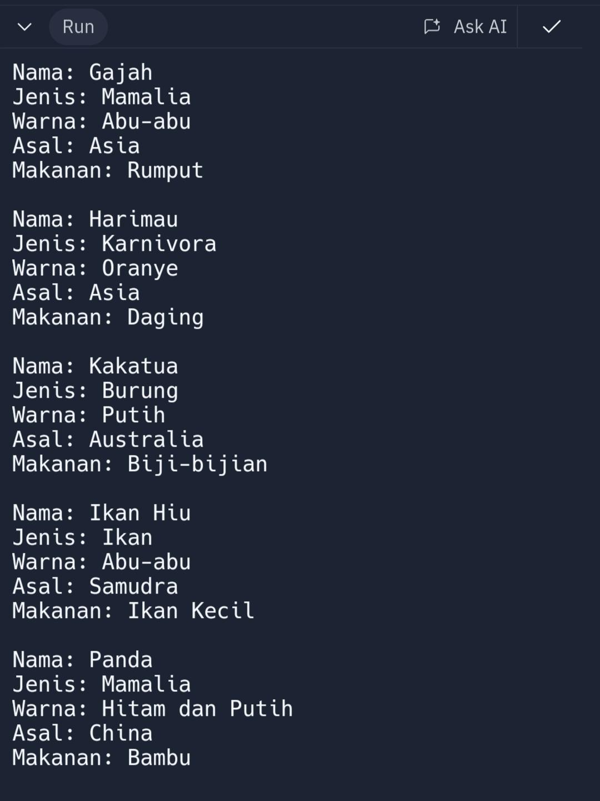
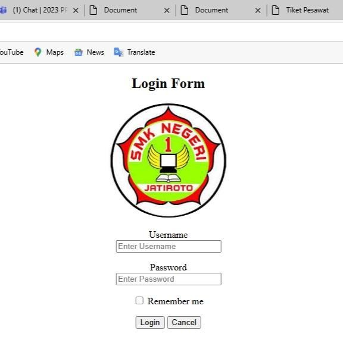
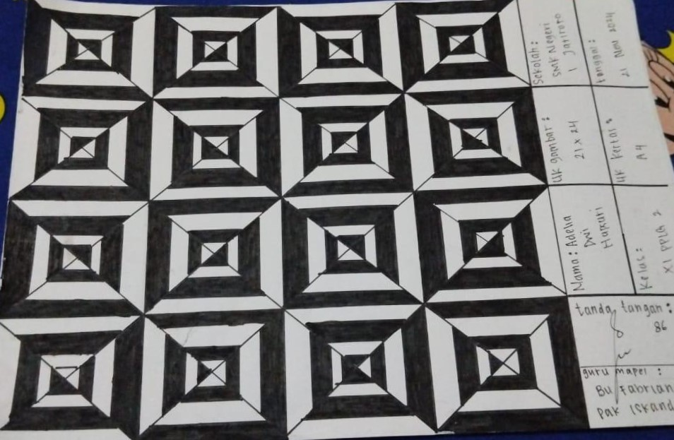
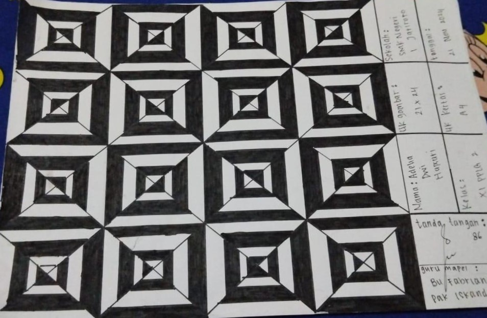

Data Pribadi
Tempat/Tanggal Lahir: Wonogiri, 22 July 2007
Jenis Kelamin: Perempuan
Agama: Islam
Kontak
Mayong, Jatirejo, Jatiroto
(+62) 857 2546 8363
adeliaadwgzz@gmail.com
@adell.liaa
Presentase Aplikasi
Presentase Bahasa Pemrograman
Link Company Profile
Link Portofolio
Sosial Media
Tentang Saya
Saya Adelia Dwi Hapsari, siswa SMKN 1 Jatiroto di jurusan PPLG. Memiliki minat di bidang desain grafis dan teknologi,saya bersemangat untuk mengembangkan keterampilan di dunia digital.Di sekolah ini saya mengikuti ekstra PMR.Saya mempunyai hobi menonton,mendesain,dan mengedit video/foto. Saya percaya bahwa pendidikan adalah langkah penting untuk meraih impian dan siap terus belajar untuk berkontribusi di industri grafis di masa depan.
Riwayat Pendidikan
TK Teratai 2 (2013-2014)
SDN 2 Jatirejo (2014-2019)
SMP Negeri 1 Jatiroto (2020-2023)
SMKN 1 Jatiroto(2023-2024)
Portofolio
C++ & HTML
- Saya membuat pemrograman di c++ saat kelas 10 yang dibimbing oleh Ibu Inggit selama 1 tahun
- Kelas 11 belajar html yang dibimbing oleh Ibu Inggit selama 5 bulan
Ini adalah hasil pemrograman saya :
 Java & DKV
- Mulai dari kelas 11 saya belajar java dibimbing oleh Ibu Riske selama 5 bulan
- Di pelajaran DKV ada menggambar Nirmana dan Bidang Slindris pelajaran ini dibimbing oleh Ibu Fabriana dan Pak Iskandar selama kurang lebih 5 bulan
Hasil pemrograman HTML saya :
.jfif) 
